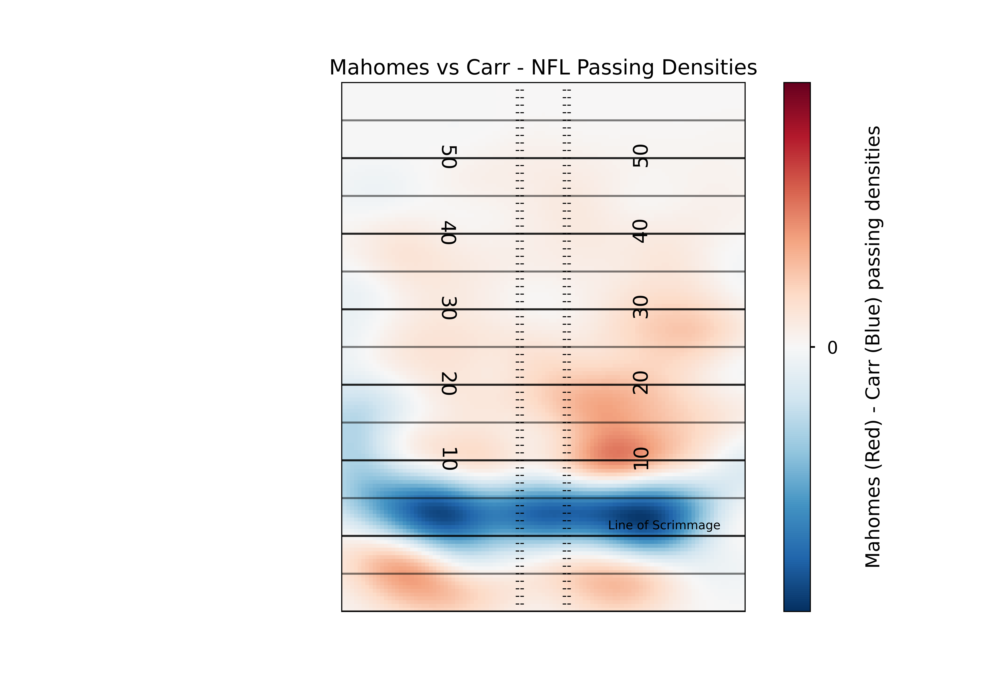
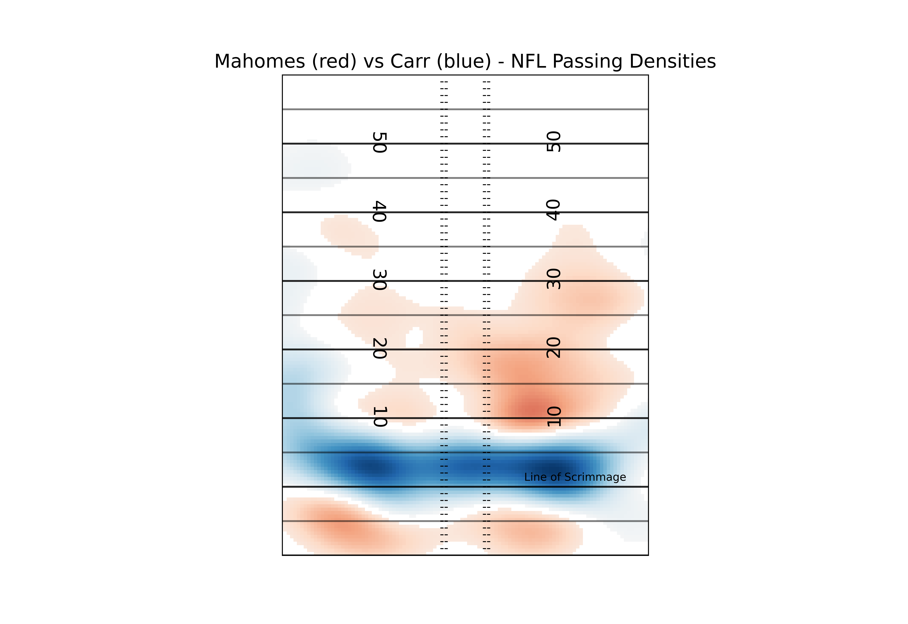
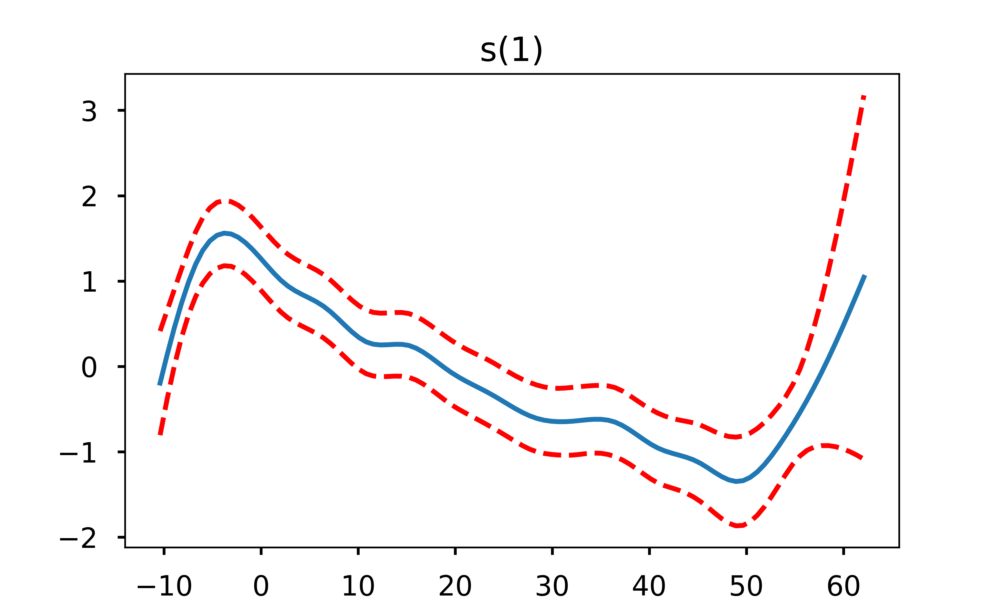
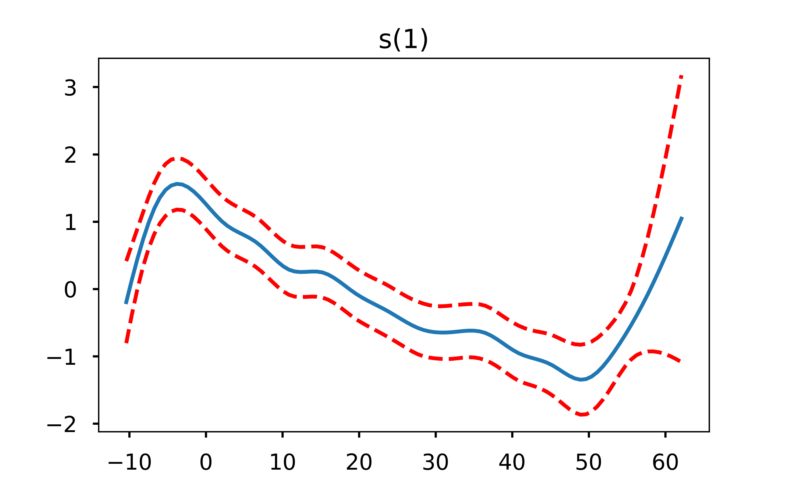
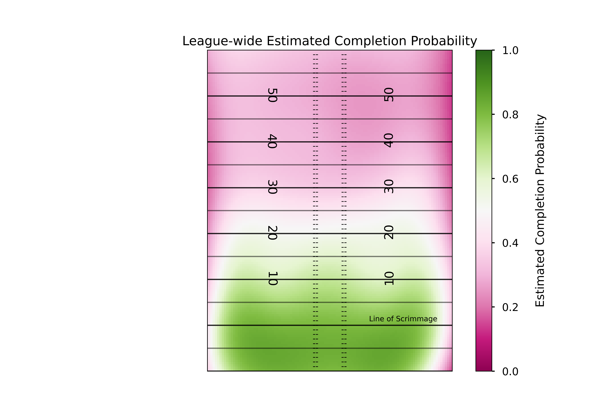
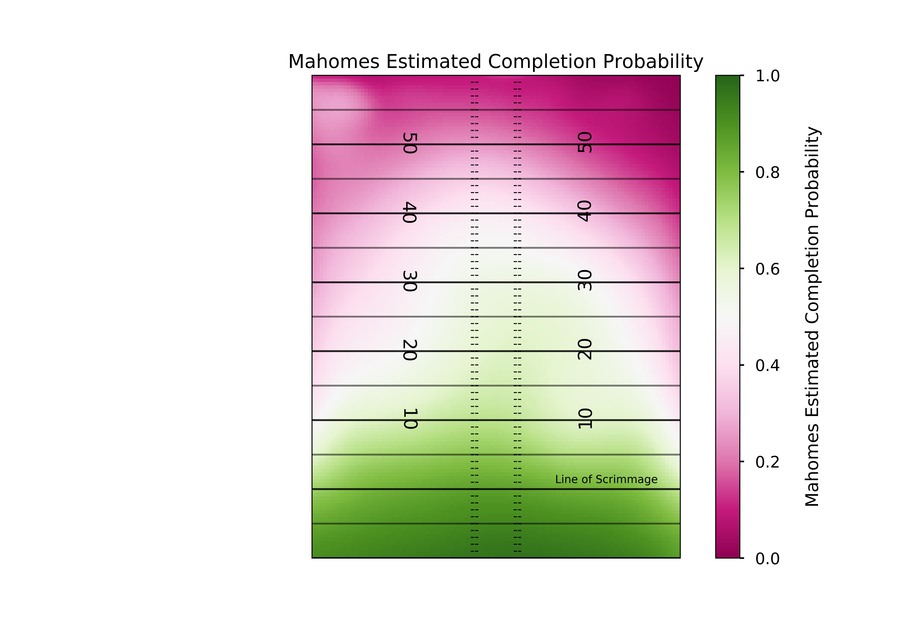

Table of Contents
Density Estimates and Expected Completion Surfaces
In this post I will cover
Using the scipy library to create your own kernel density estimator
Using this estimator to easily compare the densities of two players
Modeling the expected completion % of a pass, and plotting these probabilities as a surface over the field
Modeling the expected completion % of a pass for a particular player or team, and comparing that to the rest of the league
In my last post I gave some examples of how you can use the seaborn library in python to plot heat maps of NFL passing locations. For this post I’m going to pick right back up where we left off - performing kernal density estimates (KDEs) with the scipy library rather than relying on the seaborn library. The advantage here is that we can get an estimate of the density of the passes, and then “slice and dice” that estimate however we want, performing calculations on the output. I’ll show you why that can be useful.
As a reminder, we wanted to compare the densities of Patrick Mahomes and Derek Carr. Our graph worked fine - but what if we wanted to overlay those densities, so that the true differences were more apparent? That’s where the more manual (but still very much not manual) KDE comes in. One important note before we begin: while I’ve since modified the code a bit, as I mentioned in the previous post this Next Gen Stats scraper was first created by Sarah Mallepalle et al. (2019). I cannot recommend reading this paper enough!
Density Estimates
#imports
import pandas as pd
import seaborn as sns
import numpy as np
import matplotlib as mpl
import matplotlib.pyplot as plt
from scipy import stats
from pygam import LogisticGAM, s, f, te
#I'm surpressing warnings here because the PyGAM library warns you that the p-values are smaller than likely, which I am not concerned with.
import warnings
warnings.filterwarnings("ignore")
#load passing location data
df = pd.read_csv('https://raw.githubusercontent.com/ArrowheadAnalytics/next-gen-scrapy-2.0/master/pass_and_game_data.csv', low_memory=False)
#There's an additional index row we don't need, so I am getting rid of it here
df = df.iloc[0:,1:]
df.dropna(inplace=True)What we’re going to do here is create a helper function, which will allow is to perform the kernal density. The key to making these KDEs comparable between players is the grid size. By keeping these constant between players we are comparing apples to apples.
#Function that will help us get our data in the right shape every time we want to do this estimate
def kde_helper(df,name):
'''Function to get data in the correct form for the KDE function
inputs: dataframe, player name
output: KDE applied to mesh grid, ready for plotting'''
#Creating a mesh grid dividing each yard in half (so 4 units in a square yard),
#between the boundaries of the x and y coordinates (the min and max of our data) supplied.
m1 = df['x_coord'].loc[(df['name'].str.contains(name))]
m2 = df['y_coord'].loc[(df['name'].str.contains(name))]
#By using the same size grid each time we perform these estimates, we can make direct apples to apples comparisons between players.
#What we're doing with this line is creating a "mesh grid" (think matrix) which we'll eventually evaluate the KDE on
X, Y = np.mgrid[-30:30:121j, -10:60:141j]
#flatten and stack these grids, giving a 2xn array of positions where n = 121*141 (the # of steps for each direction)
#Basically what we are getting here is a "coordinate" for every single step we've created.
#We start the x min at -30, so there will be 141 -30s - because -30 will be paired with every step we've created in the y direction.
positions = np.vstack([X.ravel(), Y.ravel()])
#Stack the values we care about in a 2xm array (basically transposing them here), where m is just the length of our supplied data
values = np.vstack([m1, m2])
#Perform the kernel estimation on the values we care about - you can think of this as "training" the kernel estimator
kernel = stats.gaussian_kde(values)
#Generate probabilities at the positions specified, transpose them, and put them back into the grid shape for plotting
Z = np.reshape(kernel(positions).T, X.shape)
return ZNow that we’ve got the helper function, we can try it out!
#We'll start with Mahomes
name='Mahomes'
mahomes_kde = kde_helper(df,name)
#That was easy! Now Carr
name='Carr'
carr_kde = kde_helper(df,name)So we’ve got our two estimates. There are different ways you can play around with these estimates to find insights but what I’m going to focus on is the difference between the two estimates. The nice thing is this is really easy to do, you just subtract them.
#again - simple!
diff_kde = mahomes_kde - carr_kdeThe plotting here is a bit different than what we did in the previous post. We’ll be using matplotlib’s imshow() function, which is what you use to display image files like JPEGs. imshow accepts a matrix as an input, either MxN (what we have with our kde - a colormap), MxNx3 (how a traditional “picture” is stored - RGB values for each pixel location), or MxNx4 (adding an additional layer of our matrix to control the transparency level)
#Set our style
plt.style.use('seaborn-talk')
fig, ax1 =plt.subplots(1,1)
#This line is where the magic happens. Because of the way we performed the KDE, we have to rotate our data 270 degrees to plot in the orientation we want (np.rot90)
#Next, we want to make sure a pixel in the left direction is the same coordinate distance as a pixel in the vertical direction, so we set aspect to equal
#The extent is setting the coordinate system of the displayed image (along with the "origin" parameter). This is necessary to make sure that what we are indicating is the 20 yard line shows up as the 20 yardline in the pic
#Next, we want to normalize our colormap so that 0 is in the exact middle of the colormap. We can do this by having vmin and vmax have the same absolute value
#Lastly, we set the colormap parameter. I like "diverging" colormaps that have white in the middle for comparison plots, so it is clear which values are positive, negative, and 0.
plt.imshow(np.fliplr(np.rot90(diff_kde,3)),
origin='lower', aspect='equal',
extent=[-30, 30, -10, 60],
norm = mpl.colors.Normalize(vmin=-0.0005, vmax=0.0005),
cmap='RdBu_r')
#Add a "colorbar", a scale so people know what color represents what
cbar = plt.colorbar()
cbar.set_label("\nMahomes (Red) - Carr (Blue) passing densities")
#We don't really care about the values here, only the relative differences.
#The values will change depending on how small we slice up our field. So, I only want to show the viewer what 0 is.
cbar.set_ticks([0])
#Set title, remove ticks and labels
ax1.set_title('Mahomes vs Carr - NFL Passing Densities')
ax1.set_xlabel('')
ax1.set_xticks([])
ax1.set_yticks([])
ax1.set_ylabel('')
#Remove any part of the plot that is out of bounds
ax1.set_xlim(-53.3333/2, 53.3333/2)
ax1.set_ylim(-10,60)
#Plot all of the field markings (line of scrimmage, hash marks, etc.)
for j in range(-10,60,1):
ax1.annotate('--', (-3.1,j-0.5),
ha='center',fontsize =10)
ax1.annotate('--', (3.1,j-0.5),
ha='center',fontsize =10)
for i in range(-10,60,5):
ax1.axhline(i,c='k',ls='-',alpha=0.5, lw=1.5)
for i in range(-10,60,10):
ax1.axhline(i,c='k',ls='-',alpha=0.7, lw=1.5)
for i in range(10,60-1,10):
ax1.annotate(str(i), (-12.88,i-1.15),
ha='center',fontsize =15,
rotation=270)
ax1.annotate(str(i), (12.88,i-0.65),
ha='center',fontsize =15,
rotation=90)
ax1.annotate('Line of Scrimmage', (16,0),
textcoords="offset points", # how to position the text
xytext=(0,5), # distance from text to points (x,y)
ha='center',fontsize = 9) # horizontal alignment can be left, right or center

This plot lets us see the differences in the densities between the two players, but there’s a lot of color there. Depending on the device you’re viewing this chart on, it may be hard to know what areas of the field to focus on. In order to help better direct the viewer to the most prominent differences, we can “mask” the image so that we only show the extreme differences.
#Here's our mask. It may seem weird to use "masked_inside" here when we want the values on the extremes (outside these numbers), but keep in mind this is the "masked" array - so the mask_inside will hide all values inside these boundaries
#You can manually set these numbers, but for simplicity and consistency I'm going to go with the top and bottom quartiles of our differences. Show I'm showing the top 25% units where Mahomes has higher density than Carr, and the top 25% where Carr has higher density than Mahomse
diff_masked = np.ma.masked_inside(diff_kde, np.percentile(diff_kde, 25), np.percentile(diff_kde, 75))
plt.style.use('seaborn-talk')
fig, ax1 =plt.subplots(1,1)
plt.imshow(np.fliplr(np.rot90(diff_masked,3)),
origin='lower', aspect='equal',
extent=[-30, 30, -10, 60],
norm = mpl.colors.Normalize(vmin=-0.0005, vmax=0.0005),
cmap='RdBu_r')
#Set title, remove ticks and labels
ax1.set_title('Mahomes (red) vs Carr (blue) - NFL Passing Densities')
ax1.set_xlabel('')
ax1.set_xticks([])
ax1.set_yticks([])
ax1.set_ylabel('')
#Remove any part of the plot that is out of bounds
ax1.set_xlim(-53.3333/2, 53.3333/2)
ax1.set_ylim(-10,60)
#Plot all of the field markings (line of scrimmage, hash marks, etc.)
for j in range(-10,60,1):
ax1.annotate('--', (-3.1,j-0.5),
ha='center',fontsize =10)
ax1.annotate('--', (3.1,j-0.5),
ha='center',fontsize =10)
for i in range(-10,60,5):
ax1.axhline(i,c='k',ls='-',alpha=0.5, lw=1.5)
for i in range(-10,60,10):
ax1.axhline(i,c='k',ls='-',alpha=0.7, lw=1.5)
for i in range(10,60-1,10):
ax1.annotate(str(i), (-12.88,i-1.15),
ha='center',fontsize =15,
rotation=270)
ax1.annotate(str(i), (12.88,i-0.65),
ha='center',fontsize =15,
rotation=90)
ax1.annotate('Line of Scrimmage', (16,0),
textcoords="offset points", # how to position the text
xytext=(0,5), # distance from text to points (x,y)
ha='center',fontsize = 9) # horizontal alignment can be left, right or center
So now a viewer can pretty easily see the most relevant differences between two players. In this case, Carr is far more likely to target players around the line of scrimmage, while Mahomes is more likely to do “deep” screens (<-5 yards) or passes past the 10 yardline. If you aren’t a fan of the red and blue, you can play around with all of the available matplotlib colormaps. Again, I recommend a diverging map for this kind of plot but you can certainly get creative.
Expected Completion Surfaces
While densities can help tell us tendencies, they don’t tell us how well a player performed when targeting a certain area of the field. Ideally, we’d like to match this pass location data to play by play data and look at the expected points added of each throw, but due to the inconsistincies with the way different stadiums record air yards that’s quite difficult to do (though I highly encourage any ambitious reader to try. You’d add a lot to this field if you can pull it off). Since we don’t have expected points, we’ll try the next best thing: expected completion percentage.
In our dataset, we have the x and y coordinate of the pass, the player who threw the ball, the team they threw it against, some final game information (final score, game location) and whether or not the pass was completed. For now we’ll just estimate probabilities for the whole league, focusing on just the x and y coordinate of the pass. Now I’m not a statistician, so I can’t say for certain what model is best for this task. Thankfully, the amazing creators of the original NGS scraper are trained statisticians, and they’ve laid out in their paper why generalized additive models would be a good choice for this task. To quickly summarise, they allow us to both capture potential nonlinearities while also giving us a very smooth output, which is both nice for plotting and likely matches the reality of throwing a football (it is unlikely that there are very jagged differences or harsh cutoffs in difficulty as pass locations move throughout the field, but rather we’d expect the change in the “true” completion percentage to be smooth).
#We have to do a bit of cleaning to get the data in a form we can use for the model. First, we need to convert out pass_type column into a binary variable instead of the categorical complete, incomplete, touchdown, and interception.
df['is_complete'] = 0
df.loc[((df['pass_type']=='COMPLETE') | (df['pass_type']=='TOUCHDOWN')), 'is_complete'] = 1
#Now let's see the distribution of our outcome
print(df.is_complete.mean())
0.6532767626998791Our classes are a bit unbalanced. We have more complete passes than incomplete, though not too drastically so. This class imbalance would be more important if we had imbalanced penalties for assigning incorrect classes. In other words, if we cared more about false negatives than false positives. In this case, it is no worse to predict an incomplete pass complete, than it is to predict a complete pass incomplete (unlike many systems we may try to model in the medical field). So the main reason we care about class imbalance here is when it comes to assessing the performance of our model; because 65% of our passes are complete, just predicting every single pass will be complete will already get us to 65% accuracy. This post isn’t meant to be a deep dive in classification, so we’re not going to address the class imbalance further.
Let’s use a similar model structure to the one introduced by Mallepalle et al. (2019) Sticking with python, we’ll take advantage of the PyGAM library here.
#Get the features and outcomes we care about
X = df[['x_coord','y_coord']]
y = df[['is_complete']]
#Fit our model
gam = LogisticGAM().fit(X, y)
#Test the accuracy of our model
gam.summary()
LogisticGAM
=============================================== ==========================================================
Distribution: BinomialDist Effective DoF: 30.9458
Link Function: LogitLink Log Likelihood: -25666.4423
Number of Samples: 43839 AIC: 51394.7762
AICc: 51394.8243
UBRE: 3.1729
Scale: 1.0
Pseudo R-Squared: 0.0928
==========================================================================================================
Feature Function Lambda Rank EDoF P > x Sig. Code
================================= ==================== ============ ============ ============ ============
s(0) [0.6] 20 17.1 0.00e+00 ***
s(1) [0.6] 20 13.8 0.00e+00 ***
intercept 1 0.0 7.85e-05 ***
==========================================================================================================
Significance codes: 0 '***' 0.001 '**' 0.01 '*' 0.05 '.' 0.1 ' ' 1
WARNING: Fitting splines and a linear function to a feature introduces a model identifiability problem
which can cause p-values to appear significant when they are not.
WARNING: p-values calculated in this manner behave correctly for un-penalized models or models with
known smoothing parameters, but when smoothing parameters have been estimated, the p-values
are typically lower than they should be, meaning that the tests reject the null too readily.
gam.accuracy(X,y)
0.7013389903966788So with a quick simple model we’ve improved the accuracy of just assuming every pass will be complete, but we’re still incorrectly classifying 30% of passes. This isn’t too surprising though - we’ve got many different quarterbacks throwing the ball to many different wide receivers against many different defenses. Just including the location of the pass shouldn’t get us too accurate of a model, or we’d start to think that players don’t matter!
One very useful aspect of GAMs is that because they are an additive model, we can explore how each feature is influencing the model output by holding the other features constant at their average value. Let’s plot what that looks like.
##I'll confess I just copy and pasted this straight from the pygam documentation, you could definitely clean these up further and add relevant titles.
for i, term in enumerate(gam.terms):
if term.isintercept:
continue
XX = gam.generate_X_grid(term=i)
pdep, confi = gam.partial_dependence(term=i, X=XX, width=0.95)
plt.figure()
plt.plot(XX[:, term.feature], pdep)
plt.plot(XX[:, term.feature], confi, c='r', ls='--')
plt.title(repr(term))
if i == 0:
plt.show() 

I find these plots to be super cool (yes I’m a nerd but hey, you’re the one reading an open-source football post!) because they can let us easily see where the decreased probability in throwing a pass in certain areas of the field come from. One thing that immediately jumps out from these plots is that the only real influence of the x coordinate is passes close to either sideline. Otherwise, it is the depth of the pass (y coordinate) that is the driver behind the difficulty in completing it. This is exactly why a linear model would not do well here - the difference in completion probability from x coordinate 28 to x coordinate 25 is far different than the difference in cp from x coordinate 18 to x coordinate 15.
Okay so we’ve fit our model and explored the feature dependencies a bit, but how do we go about visualizing this?
Similar to our KDE plotting, we’ll build a helper function for this
def gam_helper(df):
x = df[['x_coord','y_coord']]
y = df['is_complete']
#Similar to our KDE helper, we want a mesh grid that we will eventually evaluate the model on
X, Y = np.mgrid[-30:30:121j, -10:60:141j]
#Once again we want to flatten and stack our coordinates
positions = np.vstack([X.ravel(), Y.ravel()])
#Instead of a kde we fit a gam. Here I'm adjusting the number of splines to avoid overfitting, since we aren't doing any sort of hold out or cross validation in this post
gam = LogisticGAM(s(0, n_splines=8) + s(1, n_splines=8) + te(0,1)).fit(x, y)
#Generate probabilities at the positions specified, transpose them, and put them back into the grid shape for plotting
Z = np.reshape(gam.predict_mu(positions.T).T, X.shape)
return Z
#Call our function
pass_gam = gam_helper(df)
#Plot our output, same code as before
plt.style.use('seaborn-talk')
fig, ax1 =plt.subplots(1,1)
#This is where the magic happens here. Because of the way we performed the KDE, we have to rotate our data 270 degrees to plot in the orientation we want (np.rot90)
#Next, we want to make sure a pixel in the left direction is the same coordinate distance as a pixel in the vertical direction, so we set aspect to equal
#The extent is setting the coordinate system of the displayed image (along with the "origin" parameter). This is necessary to make sure that what we are indicating is the 20 yard line shows up as the 20 yardline in the pic
#Next, we want to normalize our colormap so that 0 is in the exact middle of the colormap. We can do this by having vmin and vmax have the same absolute value
#Lastly, we set the colormap parameter. I like "diverging" colormaps that have white in the middle for comparison plots, so it is clear which values are positive, negative, and 0.
plt.imshow(np.fliplr(np.rot90(pass_gam,3)),
origin='lower', aspect='equal',
extent=[-30, 30, -10, 60],
norm = mpl.colors.Normalize(vmin=0, vmax=1),
cmap='PiYG')
#Add a "colorbar", a scale so people know what color represents what
cbar = plt.colorbar()
cbar.set_label("\nEstimated Completion Probability")
#Set title, remove ticks and labels
ax1.set_title('League-wide Estimated Completion Probability')
ax1.set_xlabel('')
ax1.set_xticks([])
ax1.set_yticks([])
ax1.set_ylabel('')
#Remove any part of the plot that is out of bounds
ax1.set_xlim(-53.3333/2, 53.3333/2)
ax1.set_ylim(-10,60)
#Plot all of the field markings (line of scrimmage, hash marks, etc.)
for j in range(-10,60,1):
ax1.annotate('--', (-3.1,j-0.5),
ha='center',fontsize =10)
ax1.annotate('--', (3.1,j-0.5),
ha='center',fontsize =10)
for i in range(-10,60,5):
ax1.axhline(i,c='k',ls='-',alpha=0.5, lw=1.5)
for i in range(-10,60,10):
ax1.axhline(i,c='k',ls='-',alpha=0.7, lw=1.5)
for i in range(10,60-1,10):
ax1.annotate(str(i), (-12.88,i-1.15),
ha='center',fontsize =15,
rotation=270)
ax1.annotate(str(i), (12.88,i-0.65),
ha='center',fontsize =15,
rotation=90)
ax1.annotate('Line of Scrimmage', (16,0),
textcoords="offset points", # how to position the text
xytext=(0,5), # distance from text to points (x,y)
ha='center',fontsize = 9) # horizontal alignment can be left, right or center
There are a few different ways we can expand on this. First, we could play around with the model more. We didn’t do any hold out or cross validation in our model, we just checked the accuracy of the model on the data it was trained on.
Additionally, the original expected completion surface model introduced by Mallepalle et. al (2019) used smooth tensor products (ti) for all terms, whereas the python GAM library does not have this functionality - instead I just used spline terms and a tensor product term. So, our results differ a bit (though they should be expected to differ some because I’ve included the 2019 season which was not in the original paper). In general for statistical modeling I prefer and recommend using R, however I wanted to try keeping this post all in python.
A logical next step is to estimate completion probabilities for a given QB or against a given defense. The simple way of doing this is very straightforward. You just filter your dataframe using .loc to get the QB or team you want, and repeat the process above. However, you’re going to be left with a model that is very likely to be “overfit” (admittedly I’ve done this quite a bit on twitter, but as I said before - I’m not a statistician!). Derek Carr for instance only has a handful of passes deep, but we would not expect that small sample size to be representative of the “true” completion percentage if Carr threw to every square yard on the field thousands of times. To combat that, one approach you can use is what Mallepalle et. al did and use a 2-Dimensional Naive Bayesian approach where you leverage the sample size of the entire league but give it less weight as the QB of interest has completed a greater number of passes in a given location of the field. Source code for this from the Mallepalle et al. paper can be found here, which is what I drew from below (though the source code is in R, it’s quite straightforward to adapt to python.)
#league-wide data
#median number of passes
med_n_passes = df.groupby(by='name')['x_coord'].count().median()
#league-wide comp. probability estimates
league_gam = gam_helper(df)
#league-wide kde
league_kde = kde_helper(df, '')
#QB data
qb_name = 'Mahomes'
qb_df = df.loc[(df['name'].str.contains(qb_name))]
#Qb passes
n_qb = len(qb_df)
#QB comp. prob
qb_gam = gam_helper(qb_df)
#QB kde
qb_kde = kde_helper(df, qb_name)
#Everyone's favorite phrase - regress to the mean!
regressed_model = (med_n_passes*league_gam*league_kde + n_qb*qb_gam*qb_kde) / (med_n_passes*league_kde + n_qb*qb_kde)Plotting this using the exact same code as before should show us how like Mahomes is to complete a pass at any part of the field, accounting for how little we know about his true ability in each area of the field.
plt.style.use('seaborn-talk')
fig, ax1 =plt.subplots(1,1)
plt.imshow(np.fliplr(np.rot90(regressed_model,3)),
origin='lower', aspect='equal',
extent=[-30, 30, -10, 60],
norm = mpl.colors.Normalize(vmin=0, vmax=1),
cmap='PiYG')
#Add a "colorbar", a scale so people know what color represents what
cbar = plt.colorbar()
cbar.set_label("\nMahomes Estimated Completion Probability")
#Set title, remove ticks and labels
ax1.set_title('Mahomes Estimated Completion Probability')
ax1.set_xlabel('')
ax1.set_xticks([])
ax1.set_yticks([])
ax1.set_ylabel('')
#Remove any part of the plot that is out of bounds
ax1.set_xlim(-53.3333/2, 53.3333/2)
ax1.set_ylim(-10,60)
#Plot all of the field markings (line of scrimmage, hash marks, etc.)
for j in range(-10,60,1):
ax1.annotate('--', (-3.1,j-0.5),
ha='center',fontsize =10)
ax1.annotate('--', (3.1,j-0.5),
ha='center',fontsize =10)
for i in range(-10,60,5):
ax1.axhline(i,c='k',ls='-',alpha=0.5, lw=1.5)
for i in range(-10,60,10):
ax1.axhline(i,c='k',ls='-',alpha=0.7, lw=1.5)
for i in range(10,60-1,10):
ax1.annotate(str(i), (-12.88,i-1.15),
ha='center',fontsize =15,
rotation=270)
ax1.annotate(str(i), (12.88,i-0.65),
ha='center',fontsize =15,
rotation=90)
ax1.annotate('Line of Scrimmage', (16,0),
textcoords="offset points", # how to position the text
xytext=(0,5), # distance from text to points (x,y)
ha='center',fontsize = 9) # horizontal alignment can be left, right or center
This is definitely a different shape than the league-wide model we plotted. But exactly how does it differ? Once again we can answer this by subtracting our two models.
diff_gam = regressed_model - league_gam
plt.style.use('seaborn-talk')
fig, ax1 =plt.subplots(1,1)
#Remember to change the min and max so again 0 is the midpoint, but the scale is more reasonable for the completion % data
plt.imshow(np.fliplr(np.rot90(diff_gam,3)),
origin='lower', aspect='equal',
extent=[-30, 30, -10, 60],
norm = mpl.colors.Normalize(vmin=-0.5, vmax=0.5),
cmap='PiYG')
cbar = plt.colorbar()
cbar.set_label("\n Completion Prob over Leage Avg")
#Set title, remove ticks and labels
ax1.set_title('Mahomes Estimated Completion Probability Over Avg')
ax1.set_xlabel('')
ax1.set_xticks([])
ax1.set_yticks([])
ax1.set_ylabel('')
#Remove any part of the plot that is out of bounds
ax1.set_xlim(-53.3333/2, 53.3333/2)
ax1.set_ylim(-10,60)
#Plot all of the field markings (line of scrimmage, hash marks, etc.)
for j in range(-10,60,1):
ax1.annotate('--', (-3.1,j-0.5),
ha='center',fontsize =10)
ax1.annotate('--', (3.1,j-0.5),
ha='center',fontsize =10)
for i in range(-10,60,5):
ax1.axhline(i,c='k',ls='-',alpha=0.5, lw=1.5)
for i in range(-10,60,10):
ax1.axhline(i,c='k',ls='-',alpha=0.7, lw=1.5)
for i in range(10,60-1,10):
ax1.annotate(str(i), (-12.88,i-1.15),
ha='center',fontsize =15,
rotation=270)
ax1.annotate(str(i), (12.88,i-0.65),
ha='center',fontsize =15,
rotation=90)
ax1.annotate('Line of Scrimmage', (16,0),
textcoords="offset points", # how to position the text
xytext=(0,5), # distance from text to points (x,y)
ha='center',fontsize = 9) # horizontal alignment can be left, right or center
Mahomes has clearly had more success than most completing passes to the deep middle of the field.
We could go further here by utilizing the mask we used previously and only showing extreme differences (maybe greater or less than 10% above average), but I think this is a good place to stop for this post. I was incredibly pleased with the amount of people who played around with this data and code after the last post, and hopefully this inspires even more. But please remember to credit and cite Sarah Mallepalle and her team at CMU, since so much of this code and the original scraper came from them!